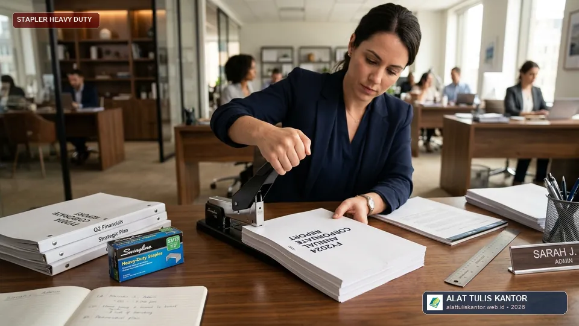
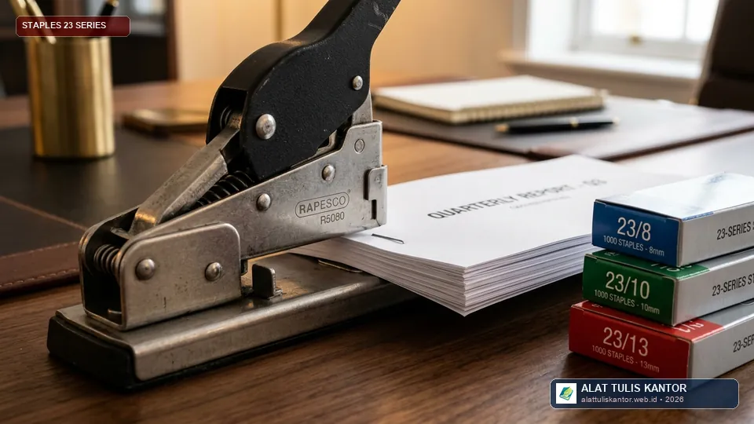

Stapler biasa yang sering macet saat menjilid berkas setebal 100 lembar adalah masalah yang sangat mengganggu produktivitas, terutama bagi staf administrasi yang rutin menangani dokumen laporan tebal, proposal proyek, atau bundel kontrak legal yang harus dijilid rapi dalam jumlah banyak setiap harinya. Memaksakan stapler standar untuk kapasitas di luar batas kemampuannya bukan hanya menghasilkan jilidan yang berantakan, tetapi juga berisiko merusak mekanisme pegas internal alat tersebut.
Artikel ini membahas cara memilih stapler heavy duty yang tepat agar dapat menjilid berkas tebal tanpa macet, lengkap dengan kriteria teknis, jenis staples kawat besar, dan tips perawatannya sebagai bagian dari kelengkapan paket ATK kantor terintegrasi. ATK Prima Distribusi menyediakan berbagai pilihan stapler heavy duty berkualitas untuk kebutuhan kantor Anda. Konsultasi kebutuhan pengadaan dapat dilakukan via WhatsApp di 0889-8964-3555.
Fakta Administrasi Perkantoran: Lebih dari 70% kerusakan stapler di divisi legal dan keuangan disebabkan oleh pemaksaan jilid berkas tebal menggunakan stapler kecil ukuran No. 10 atau 24/6 yang hanya dirancang untuk kapasitas maksimal 20 lembar.
Ringkasan Memilih Stapler Heavy Duty Anti Macet
Stapler heavy duty yang tepat untuk menjilid berkas 100 lembar tanpa macet sebaiknya memiliki:
- Kapasitas maksimal minimal 130 lembar: Memberikan margin aman 30% di atas kebutuhan riil agar tuas pegas tidak dipaksa bekerja pada batas kritis.
- Mekanisme pegas diperkuat logam solid: Mampu menyalurkan gaya tekan besar secara merata untuk menembus tumpukan kertas padat.
- Kompatibilitas staples kawat besar (Tipe 23 series): Seperti ukuran 23/8, 23/10, hingga 23/13 yang memiliki ketebalan kawat dan daya tembus jauh lebih tinggi.
- Base plate dan margin guide stabil: Mencegah tumpukan kertas bergeser dan memastikan hasil jilidan selalu lurus presisi.
Mengapa Stapler Standar Sering Macet pada Berkas Tebal
Stapler standar meja kerja pada umumnya dirancang dengan pegas ringan yang dioptimalkan untuk kapasitas 10–20 lembar, sesuai kebutuhan penjilidan dokumen nota harian. Ketika dipaksakan menjilid hingga 100 lembar, tenaga tekan yang dihasilkan mekanisme pegas standar tidak cukup kuat untuk mendorong ujung kawat menembus seluruh ketebalan kertas secara sempurna.
Akibatnya, kaki staples kawat tipis akan bengkok sebelum mencapai lembaran terbawah, kemudian terjepit di dalam jalur rel pendorong (staple magazine), menyebabkan stapler macet total dan merusak tepi dokumen penting.
Kriteria Stapler Heavy Duty yang Perlu Diperhatikan
1. Kapasitas Maksimal dengan Margin Aman
Pilih stapler dengan kapasitas maksimal yang melebihi kebutuhan riil kantor Anda. Misalnya, jika kebutuhan rutin adalah menjilid laporan berkisar 80–100 lembar, pilihlah stapler dengan spesifikasi kapasitas 130 hingga 160 lembar. Margin kapasitas ini menjaga mekanisme internal tetap awet dan memperpanjang masa pakai alat.
2. Mekanisme Pegas yang Diperkuat
Stapler heavy duty berkualitas memanfaatkan konstruksi baja tuang (heavy-gauge steel) dan sistem tuas leverage panjang. Desain tuas mekanis ini memperbesar gaya tekan tangan hingga 5 kali lipat, sehingga staf administrasi dapat menjilid bundel tebal hanya dengan satu tekanan tangan yang ringan tanpa perlu berdiri atau memukul stapler.

3. Ukuran Staples yang Sesuai (Tipe 23 Series)
Stapler heavy duty menggunakan staples kawat besar khusus, yaitu tipe 23 series dengan panjang kaki kawat yang disesuaikan dengan ketebalan dokumen:
- 23/8 (Kaki 8 mm): Ideal untuk menjilid 20 – 50 lembar kertas 70-80 gsm.
- 23/10 (Kaki 10 mm): Ideal untuk menjilid 40 – 70 lembar kertas.
- 23/13 (Kaki 13 mm): Sangat pas untuk menjilid 70 – 100 lembar kertas tebal.
- 23/17 hingga 23/24: Digunakan untuk bundel ekstra tebal di atas 120 hingga 200 lembar.
4. Mekanisme Penjepit yang Stabil & Paper Guide
Alas penopang (base plate) berbahan karet anti-slip dengan rel pengatur kedalaman kertas (adjustable paper depth guide) sangat penting agar posisi stapler selalu konsisten pada jarak 1–2 cm dari margin tepi dokumen, menghasilkan barisan arsip laporan yang seragam dan rapi.
Tabel Perbandingan: Stapler Standar vs Heavy Duty
| Parameter Evaluasi | Stapler Standar Kantor | Stapler Heavy Duty Premium |
|---|---|---|
| Kapasitas Maksimal | 10 – 20 lembar | 80 – 130+ lembar |
| Jenis & Ukuran Staples | Tipe No. 10 / 24/6 kawat tipis | Tipe 23 series (23/8 s.d 23/17) kawat baja |
| Risiko Macet pada Berkas Tebal | Sangat Tinggi (>85%) | Sangat Rendah (Anti-Jam Mechanism) |
| Tenaga Tekan Pengguna | Berat & butuh pukulan jika tebal | Ringan (Dibantu Tuas Leverage) |
| Material Bodi & Rangka | Plastik ABS / Seng Tipis | Baja Solid All-Metal Construction |
| Estimasi Harga Satuan | Rp15.000 – Rp30.000 | Rp80.000 – Rp180.000 (Investasi Awet) |
Cara Menggunakan Stapler Heavy Duty dengan Benar
- Ratakan seluruh tumpukan kertas: Ketuk tumpukan dokumen pada permukaan meja rata sebelum dijepit agar tidak ada lembaran yang menonjol keluar atau terlipat.
- Atur penggaris margin: Geser paper guide sesuai kedalaman jilid yang diinginkan agar seluruh dokumen memiliki margin staples yang sejajar.
- Posisikan stapler tegak lurus: Pastikan dokumen terletak rata di atas landasan stapler.
- Tekan dengan gerakan mantap satu kali: Tekan gagang tuas ke bawah dengan dorongan halus hingga terdengar klik penguncian. Hindari menekan berulang kali atau menyentak tuas.
- Periksa lipatan kawat di bagian belakang: Pastikan kedua ujung kawat staples melipat pipih menempel rapi pada kertas (flat clinch) agar tumpukan bundel tidak menggelembung.
Tips Perawatan agar Stapler Heavy Duty Tetap Awet
- Hindari kapasitas berlebih: Jangan memaksakan menjilid melebihi batas lembar rekomendasi dari ukuran staples yang sedang terpasang.
- Gunakan remover khusus jika macet: Jika ada kawat yang tersangkut, buka kompartemen magazine dan keluarkan menggunakan staple remover atau pinset, jangan dicongkel dengan gunting atau cutter yang dapat menggores rel pendorong.
- Simpan di lingkungan kering: Jauhkan dari kelembapan tinggi untuk mencegah karat pada engsel dan pegas baja.
- Beri pelumas berkala: Teteskan minyak pelumas mesin ringan pada titik pivot engsel setiap 6 bulan sekali agar tarikan tuas tetap empuk dan mulus.
Studi Kasus: Efisiensi Administrasi PT Karya Dokumen Sejahtera
PT Karya Dokumen Sejahtera, perusahaan jasa konsultan legal dan perpajakan yang rutin menjilid berkas laporan audit tebal untuk klien korporat, sebelumnya menghadapi keluhan staf administrasi akibat stapler meja yang macet hampir setiap hari saat menjilid berkas 120 lembar.
Setelah berkonsultasi dan beralih menggunakan stapler heavy duty kapasitas 130 lembar dengan staples tipe 23/13 dari katalog paket perlengkapan ATK kami, perusahaan berhasil menghilangkan kendala stapler macet secara total, sekaligus mempercepat waktu penyelesaian penjilidan dokumen klien hingga 40 persen serta menghemat biaya penggantian stapler rusak tahunan.
Dampak Finansial: Investasi satu unit stapler heavy duty berkualitas terbukti menghemat biaya pembelian puluhan stapler kecil yang cepat rusak serta mengeliminasi lembur administrasi akibat kendala teknis penjilidan.
Alternatif Lain untuk Menjilid Dokumen Sangat Tebal
Untuk dokumen arsip yang jumlah halamannya jauh melebihi kapasitas maksimal stapler heavy duty sekalipun, seperti laporan tahunan atau buku manual setebal 300–500 lembar, pertimbangkan menggunakan solusi alternatif berikut:
- Mesin Jilid Spiral Kawat / Plastik (Comb Binding): Memberikan fleksibilitas halaman dibuka 360 derajat dan tampak sangat profesional untuk proposal tender.
- Ordner Box File & Map Binder F4: Solusi praktis untuk pengelompokan dokumen akuntansi tebal dengan perforasi pembolong kertas 2 lubang.
- Lakban Jilid & Lem Thermal: Pilihan tepat untuk penjilidan skripsi, modul pelatihan, atau buku arsip permanen.
Cara Memesan Paket ATK dengan Stapler Heavy Duty
Untuk melihat katalog lengkap stapler heavy duty, staples kawat besar, dan perlengkapan pengikat meja kerja lainnya, kunjungi katalog produk pengikat dan penjepit ATK kami. Anda juga dapat menjelajahi seluruh pilihan katalog produk ATK korporat kami atau memilih semua paket ATK kantor yang siap pakai.
Bagi divisi keuangan dan audit, lengkapi juga kebutuhan meja kerja Anda dengan paket administrasi keuangan dan paket audit berkas kami untuk standarisasi perlengkapan kantor yang optimal.
Pertanyaan yang Sering Diajukan (FAQ)
Kesimpulan
Masalah stapler yang sering macet saat menjilid berkas tebal 100 lembar dapat diatasi tuntas dengan beralih ke stapler heavy duty yang dirancang khusus untuk kapasitas besar, dilengkapi mekanisme pegas yang diperkuat dan staples kawat ukuran sesuai. Investasi pada stapler heavy duty yang tepat akan menghemat waktu, menjaga kerapian dokumen, dan meningkatkan efisiensi operasional tim administrasi kantor Anda setiap hari.
Butuh stapler heavy duty dan paket ATK kantor lengkap untuk kebutuhan penjilidan dokumen tebal? Hubungi tim ATK Prima Distribusi via WhatsApp di 0889-8964-3555, jangkauan pengiriman aktif se-Jabodetabek dan seluruh Indonesia.